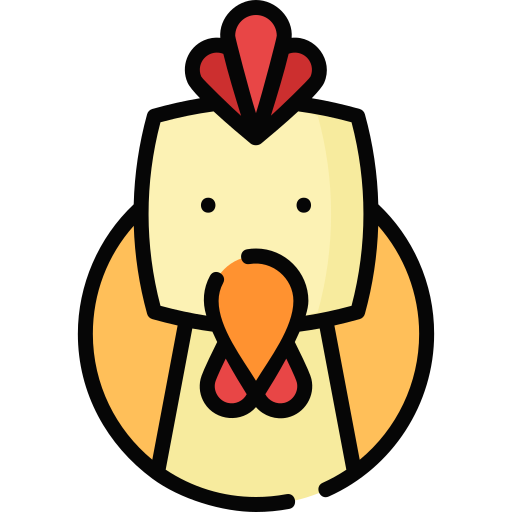

당신의 결과는?
이건 이거고 저건 저거지!
공과사 확실한 <닭>
공과사 확실한 <닭>

깔끔한 연애를 추구하며 맺고 끊는 것이 확실한 당신!
단아하고 고고한 이미지를 가지고 있어 우아한 매력을 표출하는 편이랍니다.
집중력과 기억력이 좋아 상대방과 있었던 일들을 다 기억해주는 편이고, 겉으로는 무뚝뚝하나 은근히 감수성이 풍부하답니다.
다만 자신이 생각한 선을 벗어나면 냉소적으로 바뀌고, 평소 직설적인 편이라 차갑다는 인상을 많이 줄 수 있어요.
섬세한 사람이기 때문에 예민한 경우가 많으니 마음을 평안히 다스리고, 상대방에게 좀만 더 따뜻하게 대하면 좋을 것 같아요!
단아하고 고고한 이미지를 가지고 있어 우아한 매력을 표출하는 편이랍니다.
집중력과 기억력이 좋아 상대방과 있었던 일들을 다 기억해주는 편이고, 겉으로는 무뚝뚝하나 은근히 감수성이 풍부하답니다.
다만 자신이 생각한 선을 벗어나면 냉소적으로 바뀌고, 평소 직설적인 편이라 차갑다는 인상을 많이 줄 수 있어요.
섬세한 사람이기 때문에 예민한 경우가 많으니 마음을 평안히 다스리고, 상대방에게 좀만 더 따뜻하게 대하면 좋을 것 같아요!